소리 설계 VLM 기준선 — gemini_v2, 프롬프트 v1, 평가셋 30장, 정답지 v2
| 지표 | 현재 | 12/03 목표 | |
|---|
| 필수 소리원 찾은 비율 | 92% (69/75) | 70% 이상 | 달성 |
| 지어낸 소리 비율 (소리 안 나는 물체 + 그림에 없음) | 0% (0/123) | 15% 이하 | 달성 |
| 위치 오차 대각선 10% 이내 | 95% (70/74) | (전부) | 달성 |
| JSON 성공 | 30/30 | 100% | 달성 |
| 그림 1장 평균 시간 (VLM 단계만) | 38.0초 | 전 과정 10분 이내 | 달성 |
정답지 밖 소리: 들릴 만함 25, 소리 안 나는 물체 0, 그림에 없음 0. 비교: 이전 단어 겹침 채점이면 필수 85%, 짝 없음 23%.
짝짓기: Gemini(gemini-4-neon)가 그림을 보며 뜻으로 판정. 그림: 파랑 원 = 정답지(C번호, 큰 원 = 필수), 주황 네모 = 모델(Q번호).
01_hunters — 눈 속의 사냥꾼 42.7초
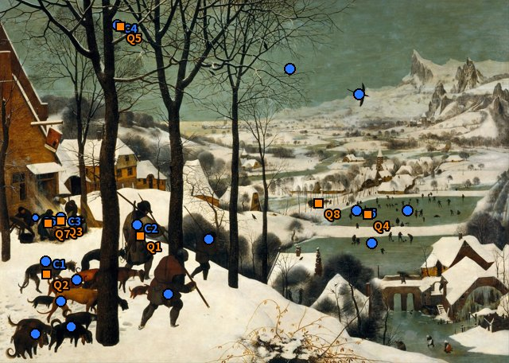
정답지 (초록 = 찾음, 빨강 = 놓침)
- C1 [필수/clustered] 사냥개 발소리와 헐떡임
- C2 [필수/clustered] 사냥꾼의 눈 밟는 발소리
- C3 [필수/point] 모닥불 타는 소리
- C4 [필수/clustered] 까마귀 울음
- C5 [필수/clustered] 스케이트 날과 아이들 웃음
- C6 [허용/point] 모닥불 곁 사람들 소리
- C7 [허용/ambient] 겨울바람
모델 출력 (초록 = 짝 있음, 파랑 = 정답지에 없지만 들릴 만함, 빨강 = 지어냄)
- Q1 눈 밟는 사냥꾼 발소리 hunters walking in snow → C2
- Q2 사냥개 헐떡이고 짖는 소리 pack of hunting dogs → C1
- Q3 장작불 타닥거리는 소리 outdoor wood fire → C3
- Q4 얼음 위 스케이트와 사람들 웅성거림 people skating on frozen ponds → C5
- Q5 까마귀 울음소리 crows in trees and sky → C4
- Q6 차가운 겨울 바람 소리 winter valley and bare trees → C7
- Q7 여관 앞 사람들 대화 소리 villagers gathered around the fire → C6
- Q8 멀리서 들리는 마차 소리 horse-drawn cart near the pond → 정답지에 없지만 들릴 만함
위치 오차
- 사냥꾼의 눈 밟는 발소리 ↔ 눈 밟는 사냥꾼 발소리: 대각선의 1.8%
- 사냥개 발소리와 헐떡임 ↔ 사냥개 헐떡이고 짖는 소리: 대각선의 2.0%
- 모닥불 타는 소리 ↔ 장작불 타닥거리는 소리: 대각선의 0.5%
- 스케이트 날과 아이들 웃음 ↔ 얼음 위 스케이트와 사람들 웅성거림: 대각선의 1.9%
- 까마귀 울음 ↔ 까마귀 울음소리: 대각선의 0.5%
- 모닥불 곁 사람들 소리 ↔ 여관 앞 사람들 대화 소리: 대각선의 2.2%
02_rainy_day — 파리의 거리, 비 오는 날 86.7초
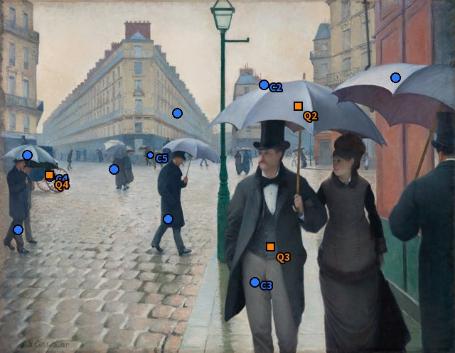
정답지 (초록 = 찾음, 빨강 = 놓침)
- C1 [필수/ambient] 빗소리
- C2 [필수/clustered] 우산에 떨어지는 빗방울
- C3 [필수/clustered] 젖은 돌길 발소리
- C4 [필수/point] 마차 바퀴와 말발굽
- C5 [허용/point] 멀리 지나가는 말
- C6 [허용/ambient] 먼 도시의 웅성임
모델 출력 (초록 = 짝 있음, 파랑 = 정답지에 없지만 들릴 만함, 빨강 = 지어냄)
- Q1 거리에 내리는 빗소리 rainy city street → C1
- Q2 우산에 떨어지는 빗소리 open umbrellas → C2
- Q3 젖은 길을 걷는 발걸음 소리 walking pedestrians → C3
- Q4 마차 바퀴와 말발굽 소리 horse-drawn carriages → C4
위치 오차
- 우산에 떨어지는 빗방울 ↔ 우산에 떨어지는 빗소리: 대각선의 7.0%
- 젖은 돌길 발소리 ↔ 젖은 길을 걷는 발걸음 소리: 대각선의 6.7%
- 마차 바퀴와 말발굽 ↔ 마차 바퀴와 말발굽 소리: 대각선의 0.3%
03_wave — 가나가와 앞바다의 거대한 파도 40.5초
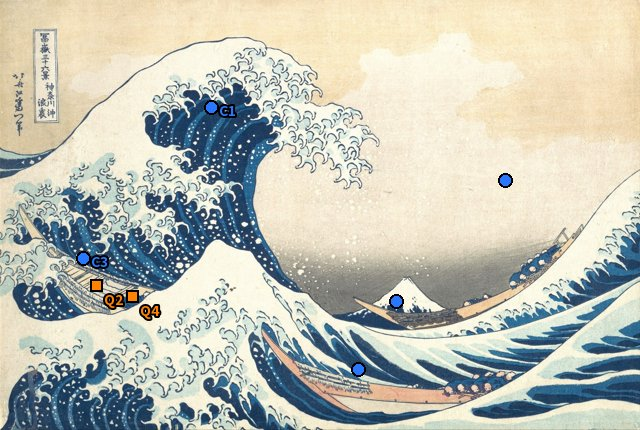
정답지 (초록 = 찾음, 빨강 = 놓침)
- C1 [필수/point] 거대한 파도 부서지는 소리
- C2 [필수/ambient] 거친 바다
- C3 [필수/clustered] 배 삐걱임과 뱃사람 외침
- C4 [허용/ambient] 바닷바람
모델 출력 (초록 = 짝 있음, 파랑 = 정답지에 없지만 들릴 만함, 빨강 = 지어냄)
- Q1 거센 파도가 부서지는 소리 giant breaking ocean waves → C1
- Q2 나무배가 파도에 부딪히고 삐걱거리는 소리 wooden fishing boats in the waves → C3
- Q3 거센 바닷바람 소리 stormy open sea and sky → C4
- Q4 배 위 어부들의 외침 소리 huddled rowers inside the wooden boats → 정답지에 없지만 들릴 만함
위치 오차
- 배 삐걱임과 뱃사람 외침 ↔ 나무배가 파도에 부딪히고 삐걱거리는 소리: 대각선의 4.0%
04_beach — 트루빌 해변 29.2초
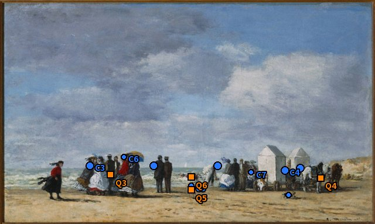
정답지 (초록 = 찾음, 빨강 = 놓침)
- C1 [필수/ambient] 파도 소리
- C2 [필수/ambient] 바닷바람
- C3 [필수/clustered] 해변 사람들의 대화
- C4 [필수/clustered] 말 울음과 말발굽
- C5 [허용/clustered] 개 짖는 소리
- C6 [허용/point] 우산 펄럭임
- C7 [허용/point] 탈의차 바퀴
모델 출력 (초록 = 짝 있음, 파랑 = 정답지에 없지만 들릴 만함, 빨강 = 지어냄)
- Q1 파도 소리 ocean surf along the shoreline → C1
- Q2 바닷바람 소리 windy coastal sky and blowing clothing → C2
- Q3 사람들의 대화 소리 groups of beachgoers standing on the beach → C3
- Q4 말발굽과 마구 소리 two horses standing beside bathing machines → C4
- Q5 개 짖는 소리 dogs on the sandy beach → C5
- Q6 물놀이하는 소리 bathers in the ocean water → 정답지에 없지만 들릴 만함
위치 오차
- 해변 사람들의 대화 ↔ 사람들의 대화 소리: 대각선의 5.1%
- 말 울음과 말발굽 ↔ 말발굽과 마구 소리: 대각선의 5.3%
- 개 짖는 소리 ↔ 개 짖는 소리: 대각선의 0.9%
05_boulevard — 몽마르트르 대로 43.0초
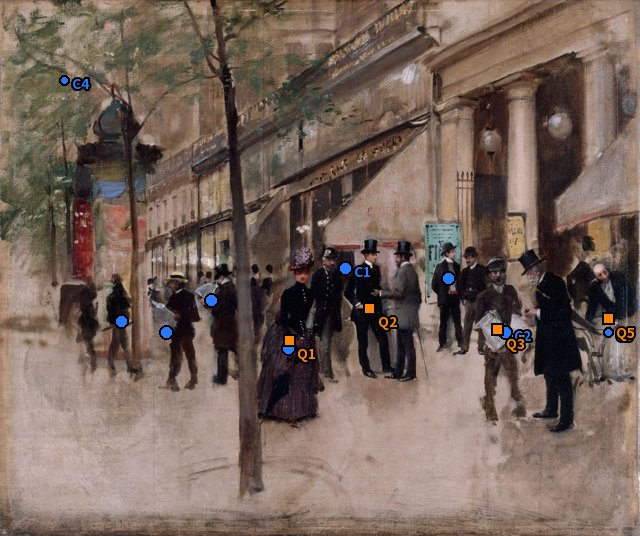
정답지 (초록 = 찾음, 빨강 = 놓침)
- C1 [필수/clustered] 거리 사람들의 대화와 발소리
- C2 [필수/point] 신문팔이 외침
- C3 [허용/point] 자전거 소리
- C4 [허용/point] 가로수 잎 바람
모델 출력 (초록 = 짝 있음, 파랑 = 정답지에 없지만 들릴 만함, 빨강 = 지어냄)
- Q1 인도를 걷는 사람들의 발소리 pedestrians strolling on the sidewalk → 정답지에 없지만 들릴 만함
- Q2 거리에서 대화하는 사람들의 말소리 men in hats standing and talking → C1
- Q3 신문팔이의 외침 소리 newspaper vendor holding newspapers → C2
- Q4 파리 대로의 웅성거리는 소음 Parisian boulevard street scene → 정답지에 없지만 들릴 만함
- Q5 노천 카페 테이블 정리 소리 waiter leaning over a sidewalk café table → 정답지에 없지만 들릴 만함
위치 오차
- 거리 사람들의 대화와 발소리 ↔ 거리에서 대화하는 사람들의 말소리: 대각선의 5.6%
- 신문팔이 외침 ↔ 신문팔이의 외침 소리: 대각선의 1.0%
06_ssireum — 씨름 24.1초
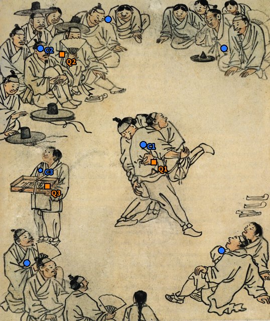
정답지 (초록 = 찾음, 빨강 = 놓침)
- C1 [필수/point] 씨름꾼 몸싸움과 기합
- C2 [필수/clustered] 구경꾼 환호와 웃음
- C3 [허용/point] 엿장수 외침
모델 출력 (초록 = 짝 있음, 파랑 = 정답지에 없지만 들릴 만함, 빨강 = 지어냄)
- Q1 씨름꾼들의 기합과 몸싸움 소리 two wrestlers grappling in the center → C1
- Q2 구경꾼들의 환호와 웃음소리 crowd of spectators sitting around the ring → C2
- Q3 엿장수 외치는 소리 taffy vendor carrying a wooden tray → C3
위치 오차
- 씨름꾼 몸싸움과 기합 ↔ 씨름꾼들의 기합과 몸싸움 소리: 대각선의 4.9%
- 구경꾼 환호와 웃음 ↔ 구경꾼들의 환호와 웃음소리: 대각선의 5.4%
- 엿장수 외침 ↔ 엿장수 외치는 소리: 대각선의 4.2%
07_seodang — 서당 27.8초
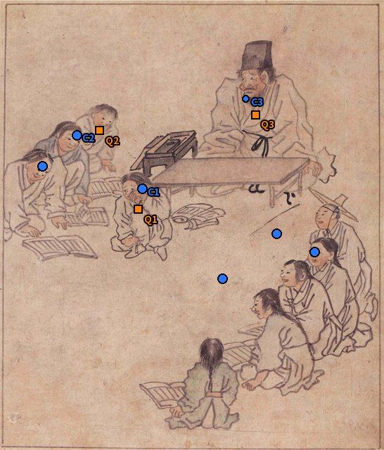
정답지 (초록 = 찾음, 빨강 = 놓침)
- C1 [필수/point] 훈장에게 혼난 아이의 훌쩍임
- C2 [필수/clustered] 아이들의 킥킥 웃음
- C3 [허용/point] 훈장의 말소리
모델 출력 (초록 = 짝 있음, 파랑 = 정답지에 없지만 들릴 만함, 빨강 = 지어냄)
- Q1 아이 울음소리 crying boy → C1
- Q2 학동들 웃음소리 smiling students → C2
- Q3 훈장님 꾸짖는 소리 seated teacher behind desk → C3
위치 오차
- 훈장에게 혼난 아이의 훌쩍임 ↔ 아이 울음소리: 대각선의 3.5%
- 아이들의 킥킥 웃음 ↔ 학동들 웃음소리: 대각선의 4.0%
- 훈장의 말소리 ↔ 훈장님 꾸짖는 소리: 대각선의 3.1%
08_mudong — 무동 27.1초
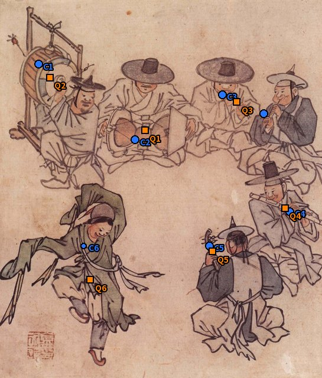
정답지 (초록 = 찾음, 빨강 = 놓침)
- C1 [필수/point] 북 소리
- C2 [필수/point] 장구 소리
- C3 [필수/clustered] 피리 소리
- C4 [필수/point] 대금 소리
- C5 [필수/point] 해금 소리
- C6 [허용/point] 춤추는 아이의 소매 휘날림과 발 구름
모델 출력 (초록 = 짝 있음, 파랑 = 정답지에 없지만 들릴 만함, 빨강 = 지어냄)
- Q1 장구 소리 hourglass drum (janggu) → C2
- Q2 북 소리 hanging barrel drum → C1
- Q3 피리 소리 bamboo oboes (piri) → C3
- Q4 대금 소리 transverse bamboo flute → C4
- Q5 해금 소리 two-stringed vertical fiddle → C5
- Q6 춤추는 발소리 dancing boy → C6
위치 오차
- 장구 소리 ↔ 장구 소리: 대각선의 2.7%
- 북 소리 ↔ 북 소리: 대각선의 3.5%
- 피리 소리 ↔ 피리 소리: 대각선의 3.3%
- 대금 소리 ↔ 대금 소리: 대각선의 1.2%
- 해금 소리 ↔ 해금 소리: 대각선의 1.3%
- 춤추는 아이의 소매 휘날림과 발 구름 ↔ 춤추는 발소리: 대각선의 7.0%
09_danopungjeong — 단오풍정 69.6초
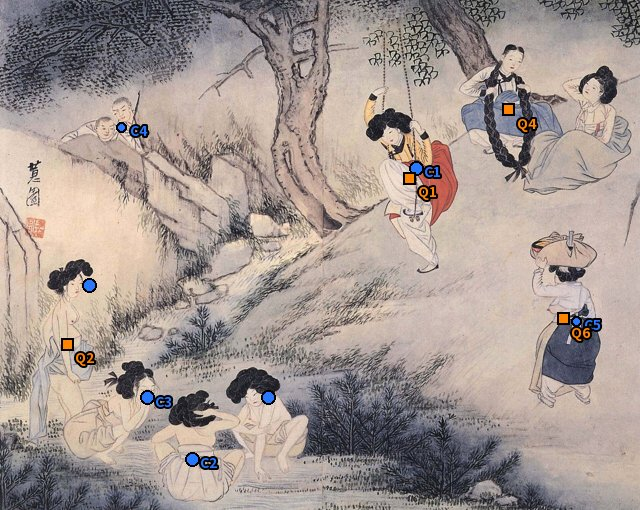
정답지 (초록 = 찾음, 빨강 = 놓침)
- C1 [필수/point] 그네 삐걱임
- C2 [필수/point] 개울물 소리
- C3 [필수/clustered] 여인들의 웃음과 물장구
- C4 [허용/point] 몰래 엿보는 아이들의 킥킥거림
- C5 [허용/point] 보따리 이고 가는 발소리
- C6 [허용/ambient] 나뭇잎 바람
모델 출력 (초록 = 짝 있음, 파랑 = 정답지에 없지만 들릴 만함, 빨강 = 지어냄)
- Q1 그네 타는 소리 woman riding a rope swing → C1
- Q2 냇가에서 목욕하며 물장구치는 소리 women bathing in the stream → C3
- Q3 시냇물 흐르는 소리 flowing stream → C2
- Q4 언덕 위 여인들의 대화 소리 two women sitting on the hillside → 정답지에 없지만 들릴 만함
- Q5 바람에 나뭇잎 스치는 소리 leafy trees → C6
- Q6 흙길을 걷는 발걸음 소리 woman carrying a bundle on her head → C5
위치 오차
- 그네 삐걱임 ↔ 그네 타는 소리: 대각선의 1.5%
- 여인들의 웃음과 물장구 ↔ 냇가에서 목욕하며 물장구치는 소리: 대각선의 7.7%
- 보따리 이고 가는 발소리 ↔ 흙길을 걷는 발걸음 소리: 대각선의 1.6%
10_inwang — 인왕제색도 26.0초
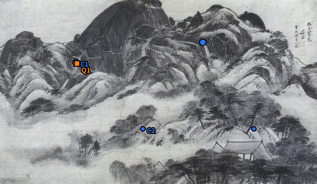
정답지 (초록 = 찾음, 빨강 = 놓침)
- C1 [필수/clustered] 비 갠 뒤 폭포 소리
- C2 [허용/clustered] 소나무 숲 바람
- C3 [허용/ambient] 비 갠 산의 물방울과 안개
모델 출력 (초록 = 짝 있음, 파랑 = 정답지에 없지만 들릴 만함, 빨강 = 지어냄)
- Q1 산골짜기 폭포 소리 waterfalls on the rocky mountainside → C1
- Q2 소나무 숲을 스치는 산바람 소리 misty pine forest and mountain slopes → C2
위치 오차
- 비 갠 뒤 폭포 소리 ↔ 산골짜기 폭포 소리: 대각선의 0.4%
11_shower — 오하시 아타케의 소나기 29.9초
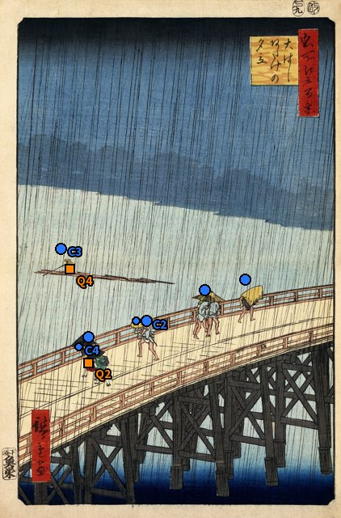
정답지 (초록 = 찾음, 빨강 = 놓침)
- C1 [필수/ambient] 소나기 빗소리
- C2 [필수/clustered] 다리 위를 뛰는 발소리
- C3 [필수/point] 뗏목 사공의 장대와 물소리
- C4 [허용/clustered] 삿갓과 우산에 떨어지는 빗방울
- C5 [허용/ambient] 강물 흐르는 소리
모델 출력 (초록 = 짝 있음, 파랑 = 정답지에 없지만 들릴 만함, 빨강 = 지어냄)
- Q1 장대비 쏟아지는 소리 heavy rain → C1
- Q2 나무 다리 위 급한 발걸음 소리 people hurrying across the wooden bridge → C2
- Q3 강물 흐르는 소리 river water → C5
- Q4 뗏목 삿대질 소리 boatman poling a log raft → C3
위치 오차
- 다리 위를 뛰는 발소리 ↔ 나무 다리 위 급한 발걸음 소리: 대각선의 4.2%
- 뗏목 사공의 장대와 물소리 ↔ 뗏목 삿대질 소리: 대각선의 3.6%
12_kambara — 가바라 밤의 눈 26.1초
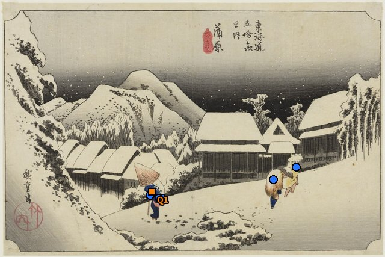
정답지 (초록 = 찾음, 빨강 = 놓침)
- C1 [필수/clustered] 눈 밟는 발소리
- C2 [허용/ambient] 고요한 눈 내리는 밤
모델 출력 (초록 = 짝 있음, 파랑 = 정답지에 없지만 들릴 만함, 빨강 = 지어냄)
- Q1 눈 밟는 발소리 travelers walking in the snow → C1
- Q2 겨울 밤바람 소리 snowy winter night landscape → C2
위치 오차
- 눈 밟는 발소리 ↔ 눈 밟는 발소리: 대각선의 0.9%
13_qingming — 청명상하도 (무지개다리 부분) 71.0초
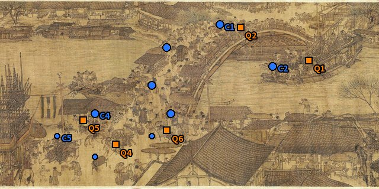
정답지 (초록 = 찾음, 빨강 = 놓침)
- C1 [필수/clustered] 다리 위 군중의 웅성임
- C2 [필수/point] 다리 밑 배의 사공들 외침
- C3 [필수/ambient] 강물 소리
- C4 [필수/clustered] 시장 상인들의 호객
- C5 [허용/clustered] 수레와 짐승 소리
모델 출력 (초록 = 짝 있음, 파랑 = 정답지에 없지만 들릴 만함, 빨강 = 지어냄)
- Q1 뱃사공 외침과 노 젓는 소리 large wooden boat passing under the bridge → C2
- Q2 다리 위 인파의 웅성거림과 발소리 crowds of people on the arched bridge and street → C1
- Q3 강물 흐르는 소리 wide flowing river → C3
- Q4 나무 수레 덜컹거리는 소리 loaded wooden carts in the foreground → C5
- Q5 시장 노점과 찻집의 떠들썩한 소리 market stalls and riverside shops → C4
- Q6 말과 당나귀 발굽 소리 pack donkeys and horse → 정답지에 없지만 들릴 만함
위치 오차
- 다리 밑 배의 사공들 외침 ↔ 뱃사공 외침과 노 젓는 소리: 대각선의 8.6%
- 다리 위 군중의 웅성임 ↔ 다리 위 인파의 웅성거림과 발소리: 대각선의 5.0%
- 수레와 짐승 소리 ↔ 나무 수레 덜컹거리는 소리: 대각선의 5.7%
- 시장 상인들의 호객 ↔ 시장 노점과 찻집의 떠들썩한 소리: 대각선의 3.1%
14_tage — 답가도 (부분) 45.3초
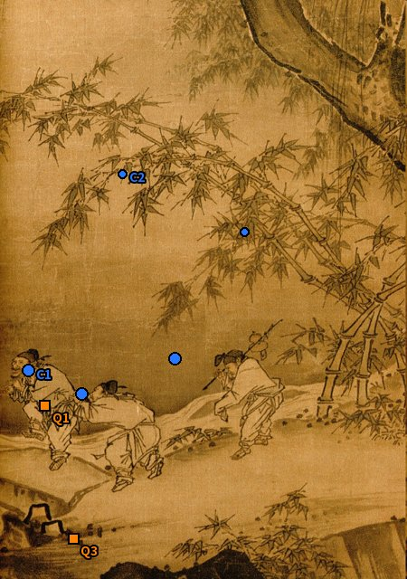
정답지 (초록 = 찾음, 빨강 = 놓침)
- C1 [필수/clustered] 농부들의 노래·웃음과 발 구르기
- C2 [허용/clustered] 대나무 잎 바람
모델 출력 (초록 = 짝 있음, 파랑 = 정답지에 없지만 들릴 만함, 빨강 = 지어냄)
- Q1 흥겹게 노래하며 발 구르는 소리 three men dancing and walking on the path → C1
- Q2 바람에 대나무 잎 스치는 소리 bamboo grove and overhanging willow tree → C2
- Q3 개울물 흐르는 소리 small stream at the bottom left → 정답지에 없지만 들릴 만함
위치 오차
- 농부들의 노래·웃음과 발 구르기 ↔ 흥겹게 노래하며 발 구르는 소리: 대각선의 5.4%
15_galette — 물랭 드 라 갈레트의 무도회 40.1초
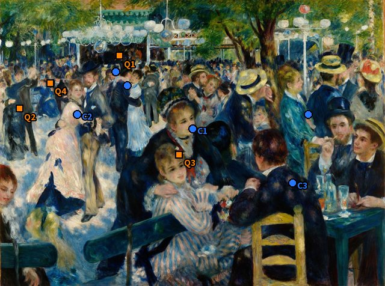
정답지 (초록 = 찾음, 빨강 = 놓침)
- C1 [필수/clustered] 사람들의 대화와 웃음
- C2 [필수/clustered] 춤추는 발소리
- C3 [필수/point] 잔 부딪히는 소리
- C4 [허용/ambient] 야외 무도회 음악
- C5 [허용/ambient] 나뭇잎 바람
모델 출력 (초록 = 짝 있음, 파랑 = 정답지에 없지만 들릴 만함, 빨강 = 지어냄)
- Q1 무도회장 악단의 춤곡 연주 소리 bandstand under the pavilion → C4
- Q2 춤추는 커플들의 발소리와 흥겨운 움직임 dancing couples on the dance floor → C2
- Q3 앞쪽 테이블과 벤치 사람들의 대화와 웃음소리 seated people talking in the foreground → C1
- Q4 정원을 메운 군중의 웅성거림과 말소리 crowd of people mingling across the garden → 정답지에 없지만 들릴 만함
- Q5 바람에 나뭇잎 스치는 소리 overhead tree canopy → C5
위치 오차
- 춤추는 발소리 ↔ 춤추는 커플들의 발소리와 흥겨운 움직임: 대각선의 12.1%
- 사람들의 대화와 웃음 ↔ 앞쪽 테이블과 벤치 사람들의 대화와 웃음소리: 대각선의 6.1%
16_horsefair — 말 시장 30.2초
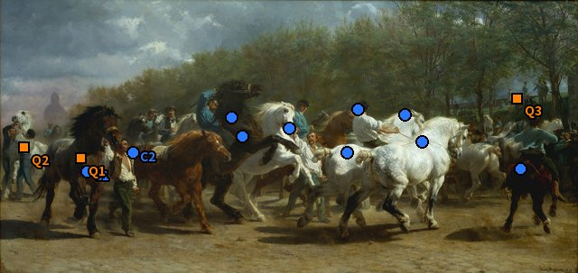
정답지 (초록 = 찾음, 빨강 = 놓침)
- C1 [필수/clustered] 말발굽과 말 울음
- C2 [필수/clustered] 마부들의 고함
- C3 [허용/ambient] 장터 사람들 웅성임
모델 출력 (초록 = 짝 있음, 파랑 = 정답지에 없지만 들릴 만함, 빨강 = 지어냄)
- Q1 말발굽과 말 울음소리 herd of running and rearing horses → C1
- Q2 마부들의 고함과 말 모는 소리 horse handlers and riders → C2
- Q3 구경꾼들의 웅성거림 spectators watching from the hillside and roadside → C3
- Q4 나뭇잎 흔들리는 바람 소리 leafy trees and cloudy sky → 정답지에 없지만 들릴 만함
위치 오차
- 말발굽과 말 울음 ↔ 말발굽과 말 울음소리: 대각선의 2.3%
- 마부들의 고함 ↔ 마부들의 고함과 말 모는 소리: 대각선의 17.0%
17_rainsteam — 비, 증기, 속도 26.6초
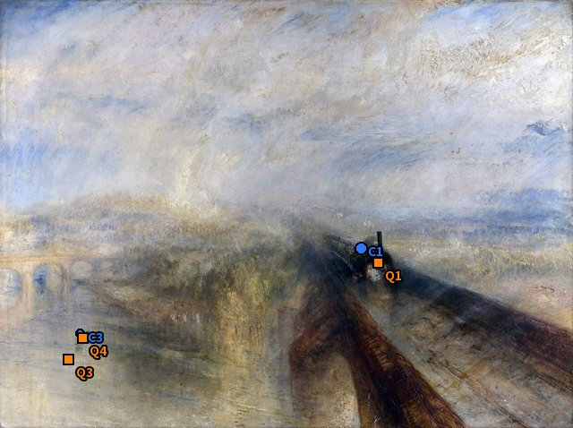
정답지 (초록 = 찾음, 빨강 = 놓침)
- C1 [필수/point] 증기기관차 소리와 기적
- C2 [필수/ambient] 비바람
- C3 [허용/point] 강 위 작은 배
모델 출력 (초록 = 짝 있음, 파랑 = 정답지에 없지만 들릴 만함, 빨강 = 지어냄)
- Q1 증기기관차 달리는 소리 steam locomotive and train on the railway bridge → C1
- Q2 빗소리와 바람 소리 rainstorm and stormy sky → C2
- Q3 강물 흐르는 소리 river on the lower left → 정답지에 없지만 들릴 만함
- Q4 나룻배 노 젓는 소리 small rowboat with passengers on the river → C3
위치 오차
- 증기기관차 소리와 기적 ↔ 증기기관차 달리는 소리: 대각선의 3.2%
- 강 위 작은 배 ↔ 나룻배 노 젓는 소리: 대각선의 0.7%
18_milkmaid — 우유 따르는 여인 (함정: 조용한 실내) 8.8초
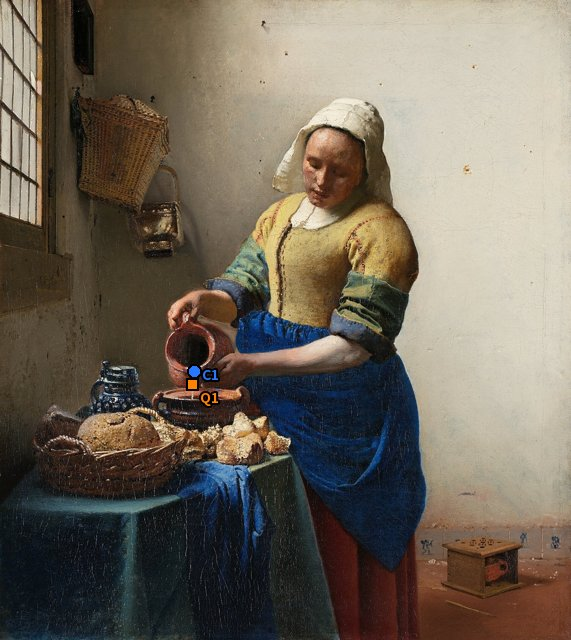
정답지 (초록 = 찾음, 빨강 = 놓침)
모델 출력 (초록 = 짝 있음, 파랑 = 정답지에 없지만 들릴 만함, 빨강 = 지어냄)
- Q1 우유 따르는 소리 stream of milk pouring into a bowl → C1
위치 오차
- 우유 따르는 소리 ↔ 우유 따르는 소리: 대각선의 1.5%
19_peasantwedding — 농민의 결혼식 66.9초
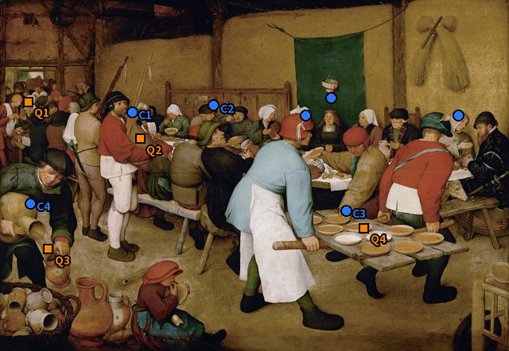
정답지 (초록 = 찾음, 빨강 = 놓침)
- C1 [필수/point] 백파이프 연주
- C2 [필수/clustered] 잔치 사람들의 대화와 웃음
- C3 [필수/clustered] 그릇과 숟가락 소리
- C4 [필수/point] 술 따르는 소리
모델 출력 (초록 = 짝 있음, 파랑 = 정답지에 없지만 들릴 만함, 빨강 = 지어냄)
- Q1 하객들의 왁자지껄한 대화와 식사 소리 crowd of peasant wedding guests seated at the banquet table and gathered at the doorway → C2
- Q2 백파이프 연주 소리 bagpiper in a red jacket holding bagpipes → C1
- Q3 항아리에서 술 따르는 소리 man pouring drink from a large jug into a pitcher → C4
- Q4 음식 나르는 발걸음과 그릇 부딪히는 소리 servers carrying a makeshift wooden tray loaded with bowls → C3
위치 오차
- 잔치 사람들의 대화와 웃음 ↔ 하객들의 왁자지껄한 대화와 식사 소리: 대각선의 30.0%
- 백파이프 연주 ↔ 백파이프 연주 소리: 대각선의 4.4%
- 술 따르는 소리 ↔ 항아리에서 술 따르는 소리: 대각선의 7.9%
- 그릇과 숟가락 소리 ↔ 음식 나르는 발걸음과 그릇 부딪히는 소리: 대각선의 4.0%
20_pearl — 진주 귀고리를 한 소녀 (함정: 초상) 10.3초

정답지 (초록 = 찾음, 빨강 = 놓침)
모델 출력 (초록 = 짝 있음, 파랑 = 정답지에 없지만 들릴 만함, 빨강 = 지어냄)
위치 오차
21_snapwhip — 채찍 놀이 29.7초
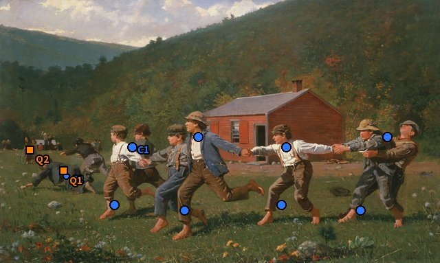
정답지 (초록 = 찾음, 빨강 = 놓침)
- C1 [필수/clustered] 아이들 함성과 달리는 발소리
- C2 [허용/point] 넘어진 아이들
- C3 [허용/ambient] 산골 바람과 새소리
모델 출력 (초록 = 짝 있음, 파랑 = 정답지에 없지만 들릴 만함, 빨강 = 지어냄)
- Q1 뛰어노는 소년들의 함성과 발소리 line of barefoot boys playing Snap the Whip → C1
- Q2 멀리서 노는 아이들의 목소리 distant children playing in the left background → 정답지에 없지만 들릴 만함
- Q3 숲과 들판에 부는 바람 소리 wooded hillside and grassy meadow → C3
위치 오차
- 아이들 함성과 달리는 발소리 ↔ 뛰어노는 소년들의 함성과 발소리: 대각선의 11.9%
22_liverpool — 달빛 속 리버풀 부두 27.6초
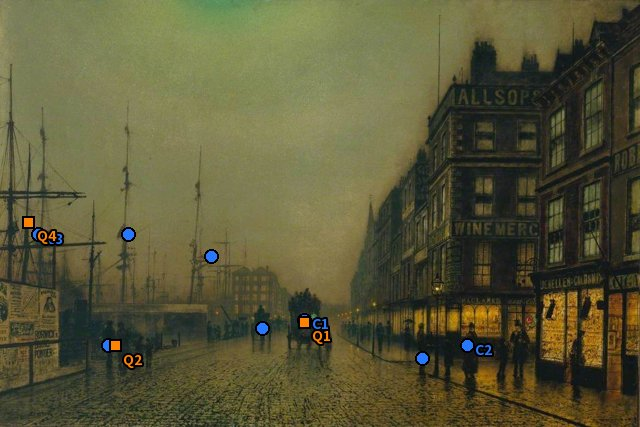
정답지 (초록 = 찾음, 빨강 = 놓침)
- C1 [필수/point] 마차 바퀴와 말발굽
- C2 [필수/clustered] 젖은 보도의 발소리
- C3 [필수/clustered] 항구의 배 삐걱임과 밧줄
- C4 [허용/ambient] 밤거리 비 내린 뒤 물소리
모델 출력 (초록 = 짝 있음, 파랑 = 정답지에 없지만 들릴 만함, 빨강 = 지어냄)
- Q1 젖은 자갈길 위 마차 바퀴와 말발굽 소리 horse-drawn omnibus and carriage on the street → C1
- Q2 젖은 보도 위 보행자 발걸음과 웅성거림 pedestrians walking along the sidewalks → C2
- Q3 보슬비 내리는 소리 rainy misty night sky and glistening wet street → C4
- Q4 정박한 범선의 삐걱거림과 항구 물결 소리 masts of sailing ships moored at the docks → C3
위치 오차
- 마차 바퀴와 말발굽 ↔ 젖은 자갈길 위 마차 바퀴와 말발굽 소리: 대각선의 0.3%
- 젖은 보도의 발소리 ↔ 젖은 보도 위 보행자 발걸음과 웅성거림: 대각선의 0.8%
- 항구의 배 삐걱임과 밧줄 ↔ 정박한 범선의 삐걱거림과 항구 물결 소리: 대각선의 2.1%
23_tuileries — 튈르리 공원의 음악회 37.5초
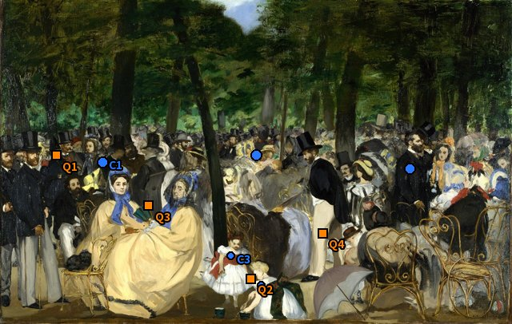
정답지 (초록 = 찾음, 빨강 = 놓침)
- C1 [필수/clustered] 공원의 사람들 대화
- C2 [필수/ambient] 야외 음악회
- C3 [허용/clustered] 아이들 노는 소리
- C4 [허용/ambient] 나뭇잎 바람
모델 출력 (초록 = 짝 있음, 파랑 = 정답지에 없지만 들릴 만함, 빨강 = 지어냄)
- Q1 군중의 웅성거림과 대화 소리 crowd of park visitors → C1
- Q2 아이들이 놀며 떠드는 소리 two young girls playing on the ground → C3
- Q3 가까이 앉은 여인들의 대화 소리 two seated women in yellow dresses → 정답지에 없지만 들릴 만함
- Q4 자갈길을 걷는 발걸음 소리 man walking in white trousers → 정답지에 없지만 들릴 만함
- Q5 공원 나무 사이로 부는 바람과 나뭇잎 소리 dense canopy of park trees → C4
위치 오차
- 공원의 사람들 대화 ↔ 군중의 웅성거림과 대화 소리: 대각선의 7.7%
- 아이들 노는 소리 ↔ 아이들이 놀며 떠드는 소리: 대각선의 2.0%
24_avercamp — 스케이트 타는 사람들이 있는 겨울 풍경 (부분) 62.3초
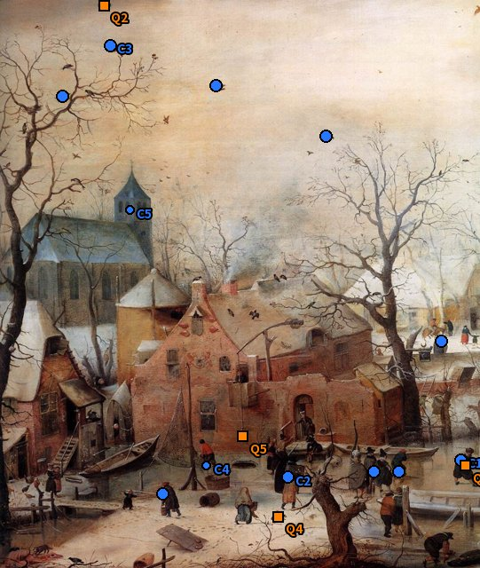
정답지 (초록 = 찾음, 빨강 = 놓침)
- C1 [필수/clustered] 스케이트와 얼음 소리
- C2 [필수/clustered] 마을 사람들 소리
- C3 [필수/clustered] 새소리
- C4 [허용/point] 얼음 구멍에서 물 긷는 소리
- C5 [허용/point] 교회 종소리
모델 출력 (초록 = 짝 있음, 파랑 = 정답지에 없지만 들릴 만함, 빨강 = 지어냄)
- Q1 스케이트 지치는 소리와 마을 사람들의 웅성거림 skaters and villagers on the frozen canal → C1
- Q2 까마귀 울음소리와 날갯짓 소리 crows in the sky, bare trees, and on the roof → C3
- Q3 차가운 겨울바람 소리 wintry sky and bare trees → 정답지에 없지만 들릴 만함
- Q4 강아지 짖는 소리 small dog running on the snow → 정답지에 없지만 들릴 만함
- Q5 도르래 삐걱거리는 소리와 물 긷는 소리 hanging bucket and pulley over the ice hole → C4
위치 오차
- 스케이트와 얼음 소리 ↔ 스케이트 지치는 소리와 마을 사람들의 웅성거림: 대각선의 1.0%
- 새소리 ↔ 까마귀 울음소리와 날갯짓 소리: 대각선의 5.4%
- 얼음 구멍에서 물 긷는 소리 ↔ 도르래 삐걱거리는 소리와 물 긷는 소리: 대각선의 6.3%
25_bargehaulers — 볼가강의 배 끄는 인부들 22.0초
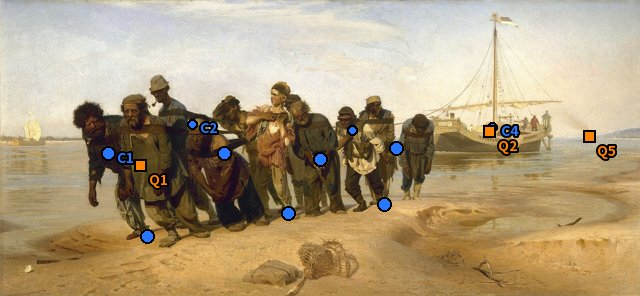
정답지 (초록 = 찾음, 빨강 = 놓침)
- C1 [필수/clustered] 인부들의 신음과 무거운 발소리
- C2 [허용/clustered] 밧줄 당기는 삐걱임
- C3 [필수/ambient] 강물과 바람
- C4 [허용/point] 범선 삐걱임
모델 출력 (초록 = 짝 있음, 파랑 = 정답지에 없지만 들릴 만함, 빨강 = 지어냄)
- Q1 배를 끄는 인부들의 발걸음과 밧줄 소리 group of barge haulers → C1
- Q2 물살을 가르는 목선의 삐걱거리는 소리 large wooden barge → C4
- Q3 강물이 강변에 철썩이는 소리 wide river and sandy shore → C3
- Q4 강변에 부는 바람 소리 open riverbank and fluttering flag → 정답지에 없지만 들릴 만함
- Q5 멀리서 들리는 증기선 엔진 소리 distant steamboat → 정답지에 없지만 들릴 만함
위치 오차
- 인부들의 신음과 무거운 발소리 ↔ 배를 끄는 인부들의 발걸음과 밧줄 소리: 대각선의 4.8%
- 범선 삐걱임 ↔ 물살을 가르는 목선의 삐걱거리는 소리: 대각선의 0.8%
26_ironmill — 철 압연 공장 51.7초
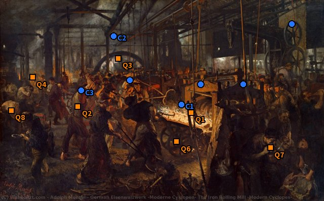
정답지 (초록 = 찾음, 빨강 = 놓침)
- C1 [필수/point] 달군 쇠를 끄는 금속 소리와 지글거림
- C2 [필수/clustered] 기계 바퀴와 압연기 굉음
- C3 [필수/clustered] 노동자들의 고함
모델 출력 (초록 = 짝 있음, 파랑 = 정답지에 없지만 들릴 만함, 빨강 = 지어냄)
- Q1 압연기 쇠 압착과 불꽃 튀는 소리 iron rolling mill pressing glowing hot metal slab → C1
- Q2 노동자 고함과 쇠집게 부딪히는 소리 steelworkers wielding long iron tongs → C3
- Q3 거대한 톱니바퀴와 기계 돌아가는 소리 large factory flywheels, gears, and overhead shafts → C2
- Q4 용광로 불길 타오르는 소리 glowing smelting furnaces in the background → 정답지에 없지만 들릴 만함
- Q5 증기 새는 소리와 공장 울림 steamy, smoky ironworks interior → 정답지에 없지만 들릴 만함
- Q6 철제 수레 바퀴 굴러가는 소리 wheeled iron trolley beneath the hot metal → 정답지에 없지만 들릴 만함
- Q7 휴식하는 노동자 말소리와 식기 소리 workers resting, eating, and drinking on the right → 정답지에 없지만 들릴 만함
- Q8 노동자들이 몸을 씻는 물소리 shirtless workers washing up on the far left → 정답지에 없지만 들릴 만함
위치 오차
- 달군 쇠를 끄는 금속 소리와 지글거림 ↔ 압연기 쇠 압착과 불꽃 튀는 소리: 대각선의 3.3%
- 노동자들의 고함 ↔ 노동자 고함과 쇠집게 부딪히는 소리: 대각선의 4.3%
- 기계 바퀴와 압연기 굉음 ↔ 거대한 톱니바퀴와 기계 돌아가는 소리: 대각선의 5.9%
27_merryfamily — 즐거운 가족 51.5초
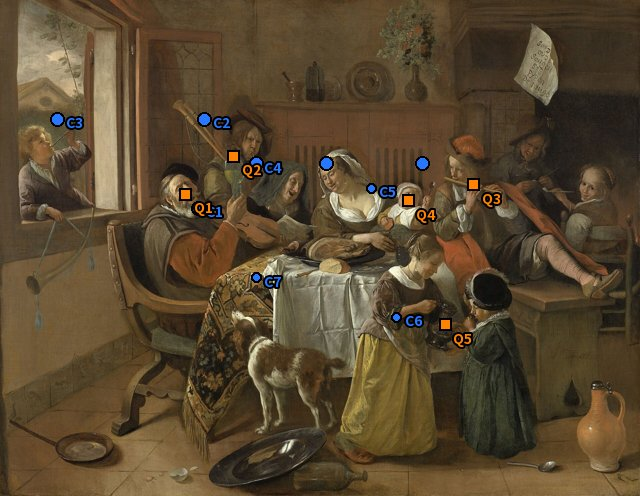
정답지 (초록 = 찾음, 빨강 = 놓침)
- C1 [필수/point] 바이올린 연주
- C2 [필수/point] 백파이프 소리
- C3 [필수/clustered] 피리 부는 아이들
- C4 [필수/clustered] 가족의 노래
- C5 [허용/point] 아기 소리
- C6 [허용/point] 술 따르는 소리
- C7 [허용/point] 개 소리
모델 출력 (초록 = 짝 있음, 파랑 = 정답지에 없지만 들릴 만함, 빨강 = 지어냄)
- Q1 어르신들의 흥겨운 노래 소리 singing old man and woman at the table → C4
- Q2 백파이프 연주 소리 man playing bagpipes → C2
- Q3 플루트 연주 소리 young man playing a wooden flute → C3
- Q4 아기의 까르르 웃는 소리 laughing baby on mother's lap → C5
- Q5 주전자에서 술 따르는 소리 girl pouring drink from a pitcher → C6
위치 오차
- 가족의 노래 ↔ 어르신들의 흥겨운 노래 소리: 대각선의 9.5%
- 백파이프 소리 ↔ 백파이프 연주 소리: 대각선의 5.8%
- 피리 부는 아이들 ↔ 플루트 연주 소리: 대각선의 6.8%
- 아기 소리 ↔ 아기의 까르르 웃는 소리: 대각선의 4.8%
- 술 따르는 소리 ↔ 주전자에서 술 따르는 소리: 대각선의 6.1%
28_railwaystation — 기차역 52.0초
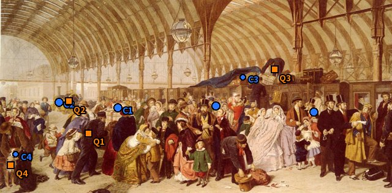
정답지 (초록 = 찾음, 빨강 = 놓침)
- C1 [필수/clustered] 역 군중의 웅성임
- C2 [필수/point] 증기기관차
- C3 [허용/point] 짐 싣는 소리
- C4 [허용/point] 개 짖는 소리
- C5 [허용/ambient] 역 지붕 아래 울림
모델 출력 (초록 = 짝 있음, 파랑 = 정답지에 없지만 들릴 만함, 빨강 = 지어냄)
- Q1 역 안 인파의 웅성거림과 발소리 crowd of passengers on the railway platform → C1
- Q2 증기기관차의 증기 뿜는 소리와 엔진음 steam locomotive in the left background → C2
- Q3 짐을 싣고 옮기는 둔탁한 소리 porters loading trunks and luggage onto the train roof and platform → C3
- Q4 개가 짖거나 낑낑대는 소리 two dogs in the lower left foreground → C4
위치 오차
- 역 군중의 웅성임 ↔ 역 안 인파의 웅성거림과 발소리: 대각선의 8.8%
- 증기기관차 ↔ 증기기관차의 증기 뿜는 소리와 엔진음: 대각선의 2.3%
- 짐 싣는 소리 ↔ 짐을 싣고 옮기는 둔탁한 소리: 대각선의 7.4%
- 개 짖는 소리 ↔ 개가 짖거나 낑낑대는 소리: 대각선의 2.7%
29_ninthwave — 아홉 번째 파도 24.4초
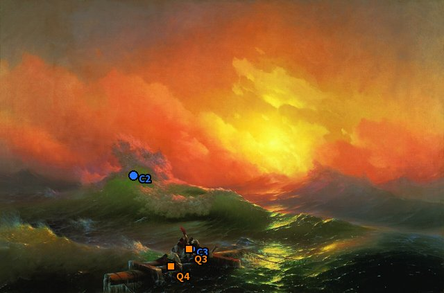
정답지 (초록 = 찾음, 빨강 = 놓침)
- C1 [필수/ambient] 폭풍 바다
- C2 [필수/point] 거대한 파도 부서짐
- C3 [필수/point] 난파된 사람들의 외침
- C4 [허용/ambient] 폭풍 바람
모델 출력 (초록 = 짝 있음, 파랑 = 정답지에 없지만 들릴 만함, 빨강 = 지어냄)
- Q1 거센 파도가 몰아치고 부서지는 소리 stormy ocean waves → C1
- Q2 휘몰아치는 폭풍 바람 소리 wind-swept sea spray and stormy sky → C4
- Q3 조난자들의 외침 소리 group of shipwreck survivors → C3
- Q4 부서진 돛대가 물결에 부딪히며 삐걱거리는 소리 floating wooden ship mast wreckage → 정답지에 없지만 들릴 만함
위치 오차
- 난파된 사람들의 외침 ↔ 조난자들의 외침 소리: 대각선의 0.4%
30_stilllife — 금박 잔이 있는 정물 (함정: 정물) 8.2초

정답지 (초록 = 찾음, 빨강 = 놓침)
모델 출력 (초록 = 짝 있음, 파랑 = 정답지에 없지만 들릴 만함, 빨강 = 지어냄)
위치 오차